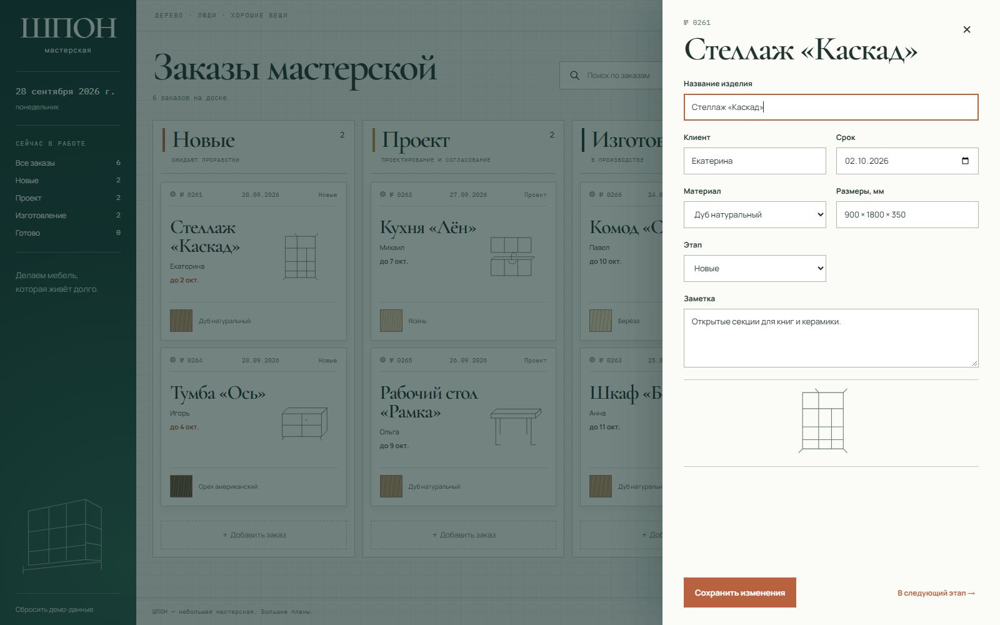
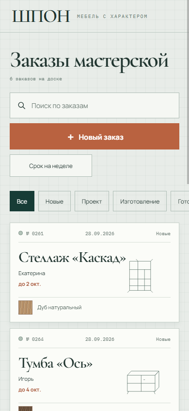
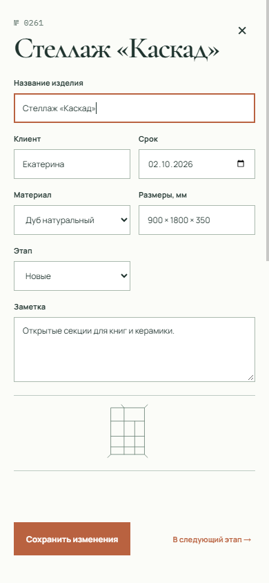
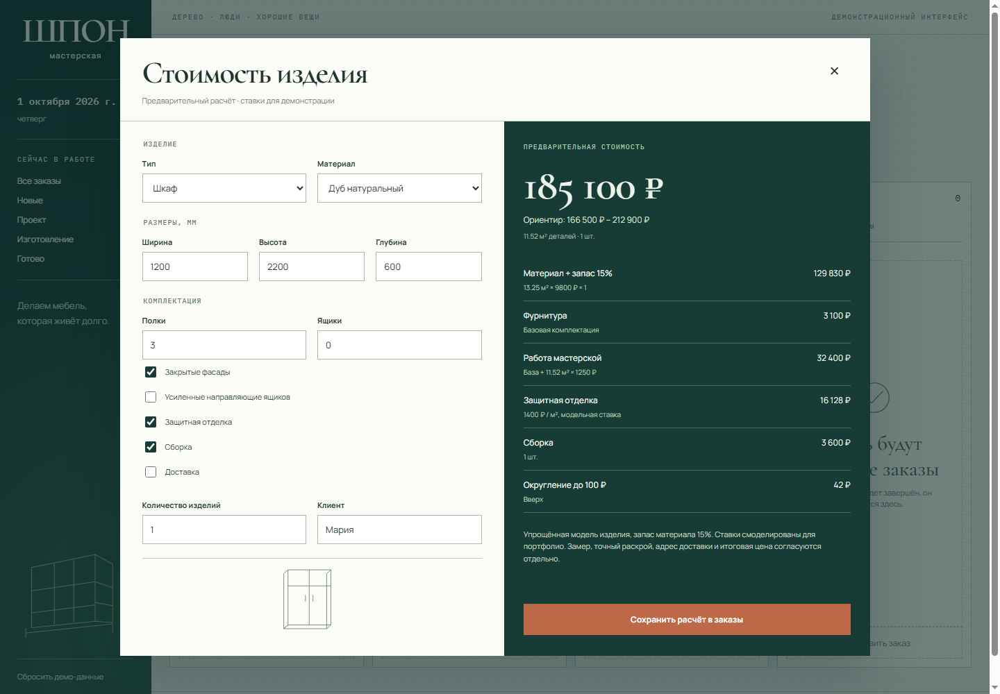

Увидеть приоритеты
Четыре этапа, счётчики заказов и сроки на карточках. Поиск и фильтры сокращают список до нужного.
Модельный бриф / мебельная мастерская
ПРОЕКТ 05 · 2026Кабинет небольшой мастерской: от первого эскиза до готовой мебели. Клиент, материал, срок и этап — в одном рабочем пространстве.
Попробовать интерфейс ↗
01 / Контекст
В основе кейса — сценарий небольшой мебельной мастерской. Мастеру нужно видеть, какие изделия ещё проектируются, какие уже в производстве и что пора отдавать заказчику.
Для каждого заказа важны конкретные вещи: размеры, древесина, имя клиента и обещанный срок. Они вынесены в карточку; детали и редактирование открываются в боковой панели.
Бриф и данные смоделированы для портфолио. Решения основаны на этом сценарии; интервью и измерения в реальной мастерской не проводились.
02 / Визуальный язык
Хвойный зелёный, бумажные карточки и глиняный акцент. Чертёжная сетка и контурные эскизы связывают интерфейс с ремеслом, а спокойная типографика помогает читать плотную информацию.
Аа Manrope / Cormorant Garamond
IBM Plex Mono — номера и даты
03 / Основной сценарий
Открыть заказ, уточнить данные, сохранить изменения или перевести изделие на следующий этап.

Четыре этапа, счётчики заказов и сроки на карточках. Поиск и фильтры сокращают список до нужного.
Редактирование в боковой панели сохраняет контекст доски. Поля проверяются перед сохранением.
Кнопка следующего этапа обновляет положение заказа. Изменения сохраняются после перезагрузки.
04 / В мастерской
На телефоне доска превращается в вертикальный список. Этапы доступны в горизонтальном переключателе, а карточка заказа открывается на всю ширину экрана.
Открыть и проверить на телефоне ↗

Расширение приложения
Калькулятор внутри кабинета: материал, фурнитура, работа и услуги отдельными строками. Расчёт сохраняется в новый заказ.

Ставки смоделированы для портфолио; точная стоимость согласуется после замера.
Модель расчёта и результаты проверок ↗05 / Результат
Создайте заказ, измените материал, найдите клиента или переместите изделие на следующий этап. В демо работают создание и редактирование, поиск, фильтры по этапу и ближайшим срокам, локальное сохранение и сброс примеров.
Открыть кабинет ШПОН ↗Демонстрационный frontend. Данные хранятся в текущем браузере; сервер, вход пользователей и совместная работа не подключены. Реальные клиенты и бизнес-результаты не заявляются.